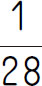
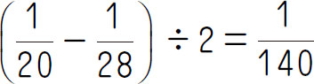
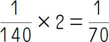
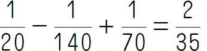
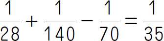
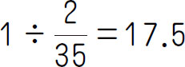
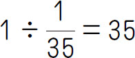
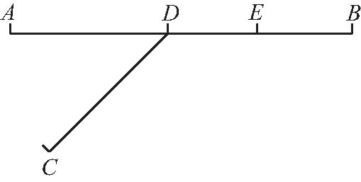

，逆水速度是
，逆水速度是第七周主要讲述了行程问题中两个物体的相遇与追及问题，了解了行程问题中一些基本的题型和一些解题策略．本周我们将关注行程问题中经典的流水问题、火车过桥问题及三个物体的相遇和追及问题，同时给出这些问题的基本解题方法，但这些题目的本质都是不变的，即都有数量关系：速度×时间＝路程．
【解题技巧】
1．做题时要重点关注速度和路程两点．
2．分析复杂的行程问题时，最好画线段图帮助思考．
【基本公式】
1．火车过桥：过桥的路程＝桥长＋车长
车速×过桥时间＝桥长＋车长
2．流水问题：顺水速度＝船速＋水速
逆水速度＝船速-水速
（第十届“春蕾杯”决赛）一艘船，第一次顺水航行420千米，逆水航行80千米，用了11小时；第二次用同样的时间顺水航行240千米，逆水航行140千米．这艘船顺水航行198千米需要多少小时？
【答案】 3.3小时．
【解析】 顺水航行420-240＝180（千米）所用的时间和逆水航行140-80＝60（千米）所用时间相同，这就说明顺水航行的速度是逆水航行速度的180÷60＝3（倍）．逆水航行80千米所用时间和顺水航行80×3＝240（千米）所用时间相等，则顺水速度每小时航行（420＋80×3）÷11＝60（千米）．这艘船顺水行198千米需要198÷60＝3.3（小时）．
【举一反三1】
一支运货船队第一次顺水航行42千米，逆水航行8千米，共用了11小时；第二次用同样的时间，顺水航行了24千米，逆水航行了14千米，求这支船队在静水中航行的速度和水流速度．
（第十届“走美杯”初赛）平时轮船从A 地顺流而下到B 地要行驶20小时，从B 地逆流而上到A 地要行驶28小时．现正值雨季，水流速度为平时的2倍，那么，从A 地到B 地再回A 地共需多少小时？
【答案】 52.5小时．
【解析】
根据题意，把全程的路程看作单位“1”，那么平时顺水速度是
，逆水速度是

．平时水速是
，现在水速是
．现在顺水速度是
，逆水速度是
．顺水时间是
（小时），逆水时间是
（小时）．从A 地到B 地再回到A 地共需17.5＋35＝52.5（小时）．
【举一反三2】
“五羊号”轮船顺流航行135千米再逆流航行70千米共用12.5小时，而顺流航行75千米再逆流航行110千米也用12.5小时，那么水流的速度是___千米/时．
某列车通过250米长的隧道用了25秒，接着通过210米长的隧道用了23秒，又知列车的前方有一辆与它行驶方向相同的货车，货车车身长320米，速度为17米/秒，列车与货车从相遇到离开需要多少秒？
【答案】 190秒．
【解析】 列车速度为（250-210）÷（25-23）＝40÷2＝20（米/秒），列车车身长为20×25-250＝500-250＝250（米），列车与货车从相遇到离开需（250＋320）÷（20-17）＝570÷3＝190（秒）．
【举一反三3】
一列火车通过750米长的大桥用了50秒（从车头上桥到车尾离桥），接着通过210米的隧道用了23秒（从车头进入到车尾离开）．又知该列车的前方有一辆与它行驶方向相同的货车，货车身长230米，速度为每秒17米．列车与货车从相遇到离开要用多长时间？
（第十二届“小机灵杯”初赛）李老师与小马、小陆、小周三位学生先后从学校出发走同一条路去电影院，三位同学的步行速度相等，李老师的步行速度是学生的1.5倍．现在李老师距学校235米，小马距学校87米，小陆距学校59米，小周距学校26米，当他们再步行多少米时，李老师距学校的距离刚好是三位学生距学校的距离和？
【答案】 42米．
【解析】 设当他们再步行x 米，三人共行了3x 米，李老师行了1.5x 米/时，李老师距学校的距离刚好是三位学生距学校的距离和，则26＋59＋87＋3x ＝235＋1.5x ，解方程得x ＝42．
【举一反三4】

如图所示，A 、B 两地相距54千米，D是A 、B 的中点．甲、乙、丙三人汽车分别同时从A 、B 、C三地出发，甲骑车去B 地，乙骑车去A 地，丙总是经过D之后往甲、乙两人将要相遇的地方骑，结果三人在距离D点5400米的E点相遇．如果乙的速度提高到原来的3倍，那么丙必须提前52分钟出发三人才能相遇，否则甲、乙相遇的时候，丙还差6600米才到D．请问：甲的速度是每小时多少千米？
1．一艘轮船从甲地开往乙地顺水而行，每小时航行28千米，到乙地后，又逆水航行回到甲地．逆水比顺水多行2小时，已知水速为4千米/时．求甲、乙两地相距多少千米．
2．某人步行的速度为2米/秒，一列火车从后面开来，超过他用了10秒钟，已知火车的长为90米，求列车的速度．
3．某船第一次先顺流航行21千米，再逆流航行4千米，第二次在同一河道中先顺流航行12千米，再逆流航行7千米，结果两次所用的时间相等．顺水船速与逆水船速之比是多少？（设船本身的速度及水流的速度都是不变的）
4．两辆汽车同时从东西两站相向开出．第一次在离东站60千米的地方相遇．之后，两车继续以原来的速度前进，各自到达对方车站后都立即返回，又在距中点西侧30千米处相遇．两站相距多少千米？
5．一列火车，从车头到达桥头算起，用5秒的时间全部驶上一座大铁桥，26秒后全部驶离铁桥，已知大桥全长525米，求火车过桥时的速度和火车的长度．
6．长135米的火车以每秒12米的速度行驶，后面开来一列长126米的火车，每秒行驶17米．这列火车从车头遇到前面的车到完全超过前面的车用了多少秒？
7．在与铁路平行的公路上有一行人和一骑自行车的人同向前进，行人每小时走3.6千米，骑车人每小时行驶10.8千米．在铁路上从这两人后面有列火车开来，火车通过行人用了22秒，通过骑车人用了26秒，这列火车全长是多少米？
8．汽车A从甲站出发开往乙站，同时汽车B、C从乙站出发与A相向而行开往甲站，途中A与B相遇后15分钟再与C相遇．已知A、B、C的速度分别是90千米/时，80千米/时，70千米/时，那么甲、乙两站的路程是多少千米？